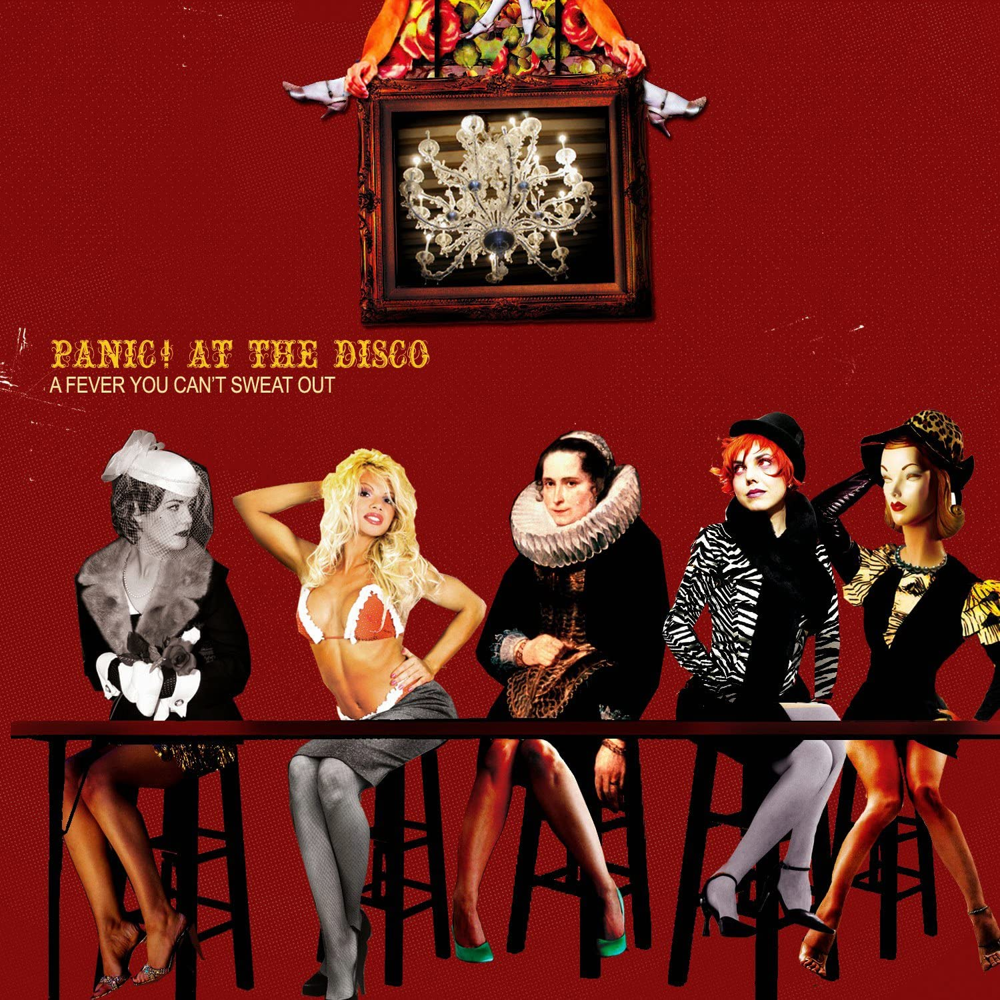
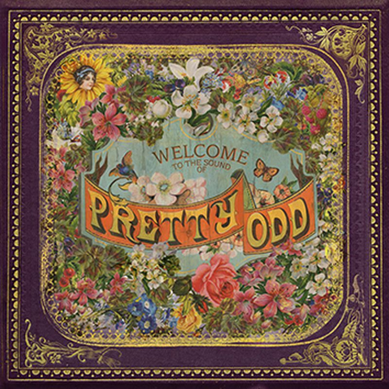
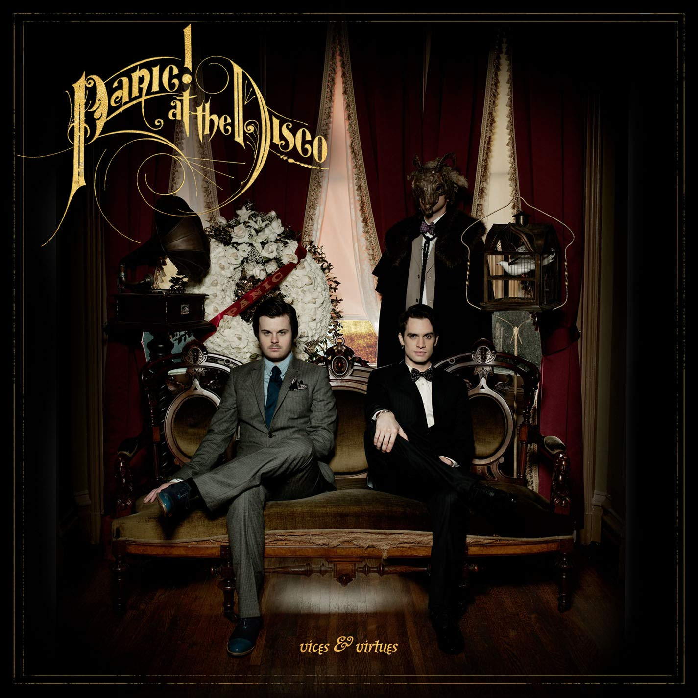
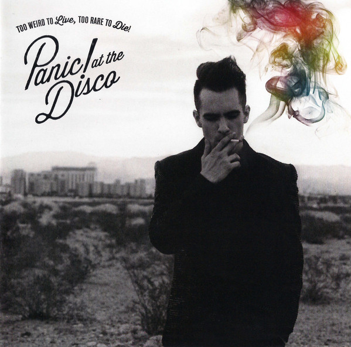
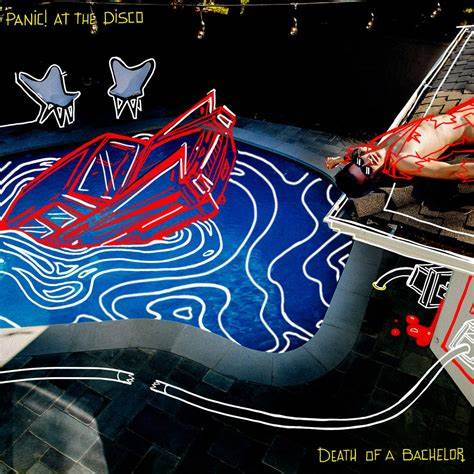
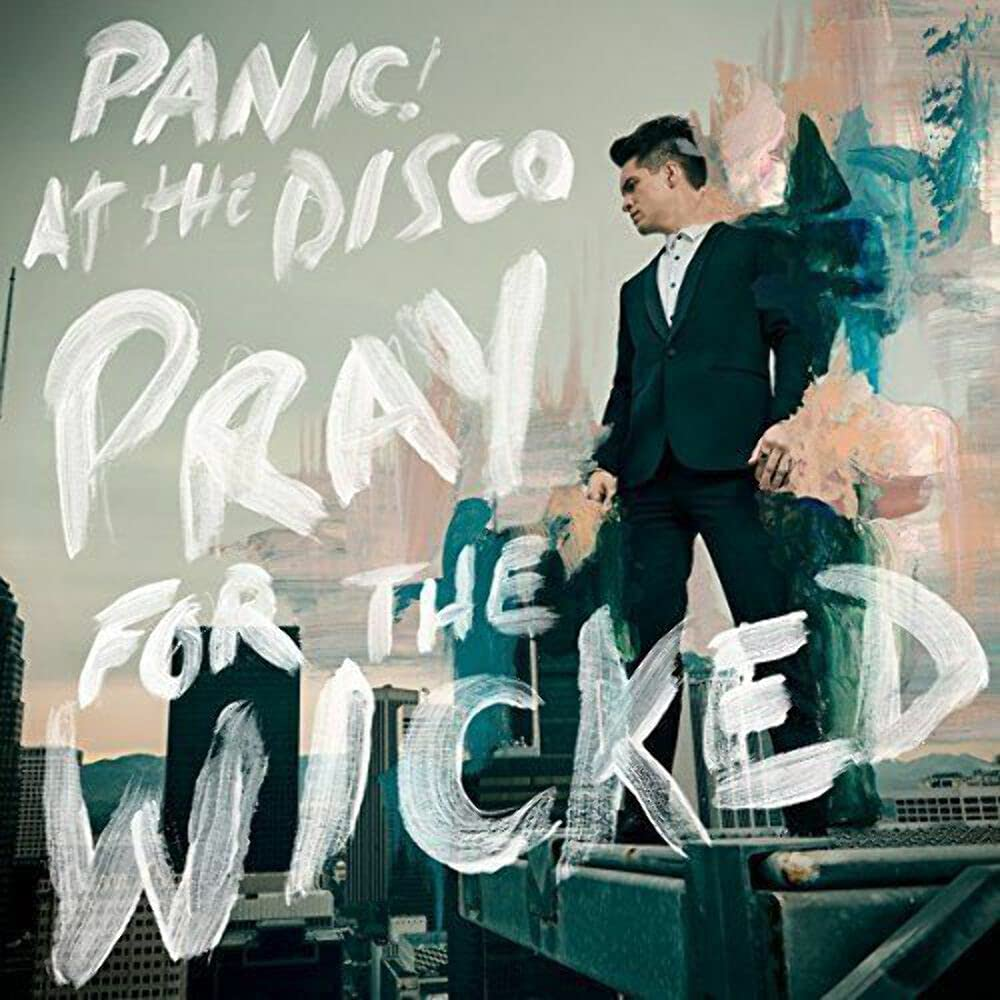
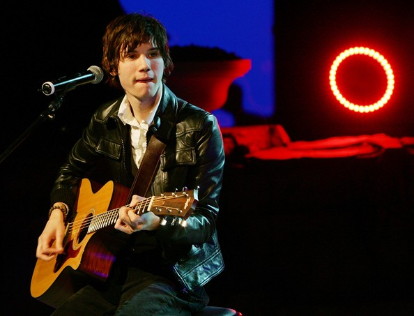
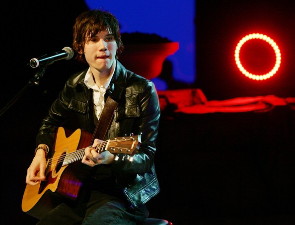

História
Tudo começou quando Ryan Ross pediu uma guitarra aos pais de presente, enquanto Spencer Smith pedia ao seus pais uma bateria. "Na verdade, naqueles primeiros anos, tudo o que fizemos foram covers do Blink-182", lembra Spencer. Cansados de fazer covers, a banda recrutou os colegas Brent Wilson e Brendon Urie para o baixo e guitarra.
Houve mudanças quando aconteceu uma apresentação da banda na escola, a qual Brendon participava. Brendon cantou, e os outros integrantes ouviram sua voz e a acharam brilhante. Convocaram-no então, para ser o vocalista.
Com a última arrumação feita, a recém-nascida Panic! at the Disco começou a praticar na sala de estar da avó de Spencer e a compor as músicas que iriam eventualmente colocá-los no caminho para o álbum "A Fever You Can’t Sweat Out".
Eles colocaram suas músicas no site MySpace e, não muito depois, a banda despertou o interesse de Pete Wentz, baixista da banda Fall Out Boy, que apresentou a banda à Decaydance/Fueled by Ramen, uma gravadora com espaço para novos talentos. "Nós nos achamos com a Decaydance e eles entenderam o que nós queríamos fazer como banda", explica Ryan. "Eles nos deram muita liberdade para fazer o que nos fazia feliz com a nossa música".
Os quatro amigos então fizeram as malas, saíram de casa e foram para College Park, em Maryland, para gravar o álbum de estréia com o famoso produtor Matt Squire, que já trabalhou com Thrice e The Receiving End Of Siren. Algumas bandas passam toda a sua carreira apenas esperando fazer um álbum tão complexo, coesivo e criativo quanto A Fever You Can’t Sweat Out, mas não o Panic! At The Disco: eles trabalharam para conseguir logo na primeira tentativa.
Para mais informações
Álbuns

A Fever You Can't Sweat Out é o álbum de estreia da banda estadunidense Panic! at the Disco, produzido por Matt Squire e lançado em 27 de Setembro de 2005 pelas gravadoras Fueled by Ramen e Decaydance. Após seu lançamento, A Fever You Can't Sweat Out se tornou um sucesso comercial. Seu segundo single, "I Write Sins Not Tragedies", chegou ao top 10 nos Estados Unidos. Ela ajudou a impulsionar as vendas no país, que chegaram a 1,8 milhão em 2011, sendo o disco mais bem vendido da banda.

Pretty. Odd. é o segundo álbum de estúdio da banda de rock Panic! at the Disco. Lançado em março de 2008 pela Decaydance e pela Fueled by Ramen, foi gravado no Studio at the Palms em Paradise, Nevada, com produção adicional de Rob Mathes no Abbey Road Studios em Londres. O disco recebeu crítica mista e foi menos bem sucedido que o álbum anterior - que chegou à certificação de dupla platina -, vendendo 422 mil cópias até 2011. Ele ficou 18 semanas na Billboard 200 e o single "Nine in the Afternoon" ganhou a certificação de ouro pela RIAA. Em 2016, o disco também chegou ao certificado de ouro.

Vices & Virtues é o terceiro álbum de estúdio da banda norte-americana Panic! at the Disco. Seu primeiro single, "The Ballad of Mona Lisa", foi lançado no dia 1 de fevereiro de 2011 e estreando na posição #89 da Billboard Hot 100. O álbum é o primeiro lançado pela banda depois da saída do guitarrista Ryan Ross e do baixista Jon Walker. Spencer Smith foi o responsável pela percussão e Brendon Urie pelos vocais e quase todos os outros instrumentos.

Too Weird to Live, Too Rare to Die! é o quarto álbum de estúdio da banda americana de pop rock Panic! at the Disco. O álbum estreou ficando em 2º lugar da USA Billboard 200. Essa é a segunda vez que Panic! at the Disco consegue o número dois na Billboard, a primeira vez foi com o precursor da banda, "A Fever You Can't Sweat Out", que lhes renderam um disco de platina, o vídeo do ano e melhor vídeo de rock do MTV Music Awards de 2006, com "I Write Sins Not Tragedies".

Death of a Bachelor é o quinto álbum de estúdio pela banda de rock americana Panic! at the Disco, lançado em 15 de janeiro de 2016 pela DCD2 e Fueled by Ramen.É o segundo álbum da banda lançado com nenhum dos integrantes da formação original, exceto o vocalista. Death of a Bachelor é o primeiro álbum da banda a chegar ao topo da parada norte americana Billboard 200, vendendo 190 mil cópias em sua primeira semana de lançamento. O álbum vendeu mais de 382 mil cópias mundialmente até a sua sexta semana pós lançamento. Também foi indicado ao Grammys 2017 na categoria de "Melhor Álbum de Rock".

Pray for the Wicked é o sexto álbum de estúdio da banda americana de rock Panic! at the Disco. Seu lançamento ocorreu em 22 de junho de 2018 e foi feito pelas gravadoras Fueled by Ramen e DCD2. Pray for the Wicked estreou em número um na Billboard 200 dos Estados Unidos com 180.000 unidades equivalentes ao álbum, das quais 151.000 foram vendas em formatos físicos. É o segundo álbum número um da banda nos Estados Unidos. O álbum também estreou na primeira posição na Austrália, tornando-se o segundo álbum australiano número um da banda


 
